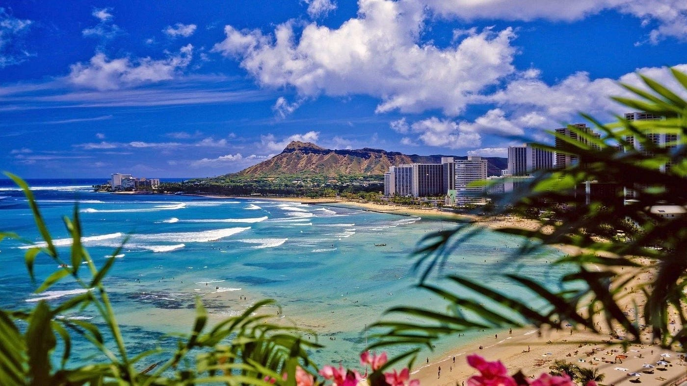

The Aloha State
Welcome to Hawaii
Hawaii is a tropical paradise and the 50th state of the United States, located in the Pacific Ocean. It consists of eight main islands, with Oahu, Maui, and the Big Island being the most well-known. The state is renowned for its stunning natural beauty, including pristine beaches, lush rainforests, active volcanoes, and vibrant coral reefs. Hawaii's culture is a rich blend of Native Hawaiian traditions, Asian influences, and Western customs, reflected in its music, dance, cuisine, and festivals. The state's capital, Honolulu, is a bustling city on Oahu known for its historic sites like Pearl Harbor, as well as the famous Waikiki Beach. Tourism, agriculture, and military defense are key components of Hawaii's economy. The islands offer a unique and diverse environment, making them a popular destination for visitors seeking adventure, relaxation, and a glimpse into a distinctive and vibrant cultural heritage.

Notable Attractions:
Hawaii offers a plethora of attractions for visitors and residents alike:
- Waikiki Beach: Famous for its surfing and vibrant nightlife.
- Pearl Harbor: A historic site and active naval base with memorials and museums.
- Hawaii Volcanoes National Park: Home to Kilauea, one of the world's most active volcanoes.
- Na Pali Coast: Renowned for its dramatic cliffs and lush landscapes.
- Haleakala National Park: Features the world's largest dormant volcano crater.